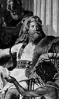

Vizigot şefi Alaric (370-410) 410 yılında Roma’yı yağmaladı. Batı tarihinde çığır açan bu olay Roma İmparatorluğu’nun çöküşünün habercisiydi. Yağma, antik çağdaki diğer örneklere kıyasla oldukça ılımlı bir biçimde gerçekleşmişti. Got istilası sadece altı gün sürmüş, en büyük binaların çoğuna dokunulmamıştı. Yine de yağma hareketi Roma İmparatorluğu’nun ne kadar güçsüz düştüğünü kanıtlamış oldu.

Gotlar 2. yy’da Roma sınırlarına akın etmeye başlayan bir Alman kabilesiydi. 4. yy’da Ostrogotlar (Doğu Gotları) ve Vizigotlar (Batı Gotları) olarak ikiye ayrıldılar. Bir dönem Roma için paralı askerlik yapan Alaric, 395 yılında Vizigotların şefi seçildi.
Alaric iktidarı ele geçirir geçirmez Piraeus, Corinth, Argos ve Sparta’nın da içinde bulunduğu Yunanistan’daki Roma şehirlerine saldırılar düzenlendi. Bu yağmalamalar sırasında Sparta yerle bir edilmişti. 397 yılında Doğu Roma İmparatoru barış yapmak için ona rüşvet vermeyi teklif etti. Bunun üzerine Alaric batıyı hedef almaya başladı.
401 yılında İtalya’yı işgal eden Alaric, Romalılar tarafından yenilgiye uğratıldı. Sonraki girişimi de başarısızlıkla sonuçlandı. Sonunda 408 yılında Roma’ya ulaşabildi. Şehri üç kez kuşattıktan sonra 24 Ağustos 410’da nihayet şehre girdi. 800 yıldan sonra ilk kez Roma’ya yabancı bir ordu ayak basıyordu.
Got zaferinin haberi hızla antik dünyaya yayıldı. Tarihçi Edward Gibbon’un (1737-1794) Roma İmparatorluğu’nun Yükseliş ve Çöküşü’nde yazdığı gibi “Bu korkunç felaket, saldırıdan dolayı şaşkınlığa uğramış imparatorluğu korku ve dehşetle doldurdu.” Yaşananlar kaçınılmaz sonun habercisiydi. Sadece elli küsür yıldan sonra Batı Roma İmparatorluğu tamamen yıkılacaktı.
Roma’yı yağmaladıktan sonra Alaric, askerleriyle kuzeye ilerledi. Kısa bir süre sonra İtalya’da öldü.
Ek Bilgiler
1- Alaric’in güçleri Roma’ya Porto Salaria’dan girdiler. Şehrin bu kapısı 1921 yılına kadar ayakta kalmıştır.
2- İmparatorluğun başkentinin yağmalanması pek çok Romalı için büyük bir şoktu. Afrika’da yaşayan Romalı bir yazar olan Hippolu Saint Augustine (354-430) “The City of God” (Tanrı Şehri) adlı kitabında politik sorunlar karşısında dine sığınmayı öneriyordu. Bu kitap Hıristiyan teoloji tarihinde önemli bir yere sahiptir.
3- Gibbon’a göre Gotlar, Alaric’in naaşını ölümünden sonra akış yönünü değiştirdikleri Busento Nehri’nin yatağına gömdüler. Daha sonra mezarın yerini gizlemek için nehir tekrar doğal yatağına alındı.